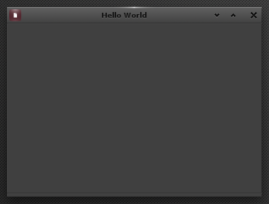

"Hello World" in C#
This first tutorial ensures that your EFL installation is ready to produce C# applications and demonstrates the first basic EFL concepts.
| WARNING | ||
|---|---|---|
 |
Some C# classes are currently in BETA state They should only be used for experimenting and NOT for any product development. These classes are marked as BETA in the reference documentation. The source code for the tutorials is subject to change in the future. |
|
Prerequisites
- Read the Setting Up a C# Development Environment guide so you have a working EFL installation with C# support.
Hello World
Copy the code below into a file named hello-world.cs (The walkthrough is in the following section).
using System;
public class Example
{
#if WIN32
[STAThreadAttribute()]
#endif
public static void Main()
{
// Initialize EFL and all UI components
Efl.All.Init(Efl.Components.Ui);
// Create a window and initialize it
Efl.Ui.Win win = new Efl.Ui.Win(Efl.App.AppMain);
// Set the window's title
win.SetText("Hello World");
// Request that the window is automatically hidden when the "close"
// button is pressed
win.SetAutohide(true);
// Window size must be explicitly set, otherwise it will be invisible
// due to its lack of content.
win.SetSize(new Eina.Size2D(360, 240));
// Start the EFL main loop
Efl.Ui.Config.Run();
// Shutdown EFL
Efl.All.Shutdown();
}
}
Compile it as explained in the Setting Up a C# Development Environment guide and run the executable. If everything worked according to plan, you should see an empty window like this:

Walkthrough
Main
The program starts with a simple class structure to define the Main entry point:
using System;
public class Example
{
#if WIN32
[STAThreadAttribute()]
#endif
public static void Main()
{
[...]
}
}
NOTE: The
STAThreadAttributeis currently necessary in Windows systems because of limitations in theecore_win32internal library of EFL. You can compile passing-define:WIN32tomcsto indicate that you are compiling on a Windows system.
EFL Initialization
EFL is initialized with the Efl.All.Init() method:
// Initialize EFL and all UI components
Efl.All.Init(Efl.Components.Ui);
It accepts a parameter specifying which EFL components your app will require. This enables faster boot times and better resource usage by not loading and starting unnecessary components.
The only currently available options are Efl.Components.Basic and Efl.Components.Ui. When not specified, Basic is assumed.
Creating the Window
All EFL objects, like Windows, Widgets or Timers, are created using the standard new operator, for example:
Efl.Ui.Win win = new Efl.Ui.Win();
However, EFL object constructors may have additional optional parameters. The first one, parent, is always available: Any EFL object can be the child of another EFL object (its parent). Parents will take care of disposing of all their children upon destruction, greatly simplifying object life-cycle management.
In the tutorial code:
// Create a window and initialize it
Efl.Ui.Win win = new Efl.Ui.Win(Efl.App.AppMain);
// Set the window's title
win.SetText("Hello World");
// Request that the window is automatically hidden when the "close"
// button is pressed
win.SetAutohide(true);
Observe how the window is created as a child of Efl.App.AppMain, the application's main loop. This ensures that the window will receive all messages coming from the application.
Also, note the further customization of the Window object:
- The window title is set to
Hello World. - The
Autohideflag is set to true. This means that the window will automatically be hidden when the user closes it. The default behavior for an app when all its windows are hidden is to quit.
The Window Size
By default, windows adjust themselves to have the minimum size that allows displaying all their content. In this tutorial the window has no content at all, so its size will be 0 pixels wide and 0 pixels tall.
The next tutorial adds some content to the window, but meanwhile, you can manually set the size of a window:
// Window size must be explicitly set, otherwise it will be invisible
// due to its lack of content.
win.SetSize(new Eina.Size2D(360, 240));
Starting Up the User Interface
Now that all the required EFL objects have been created (only a window, actually), it's time to relinquish control to EFL.
// Start the EFL main loop
Efl.Ui.Config.Run();
This method does not return until EFL exits. In any application you will set callback methods that EFL will use to inform you of some events, and you will plug more code on those methods.
The following tutorials show how to do that. For this one, the only remaining thing is:
Shutting Down
// Shutdown EFL
Efl.All.Shutdown();
Always remember to shut down EFL to close windows, network connections and free resources.
Summary
In this tutorial you have learned:
- How to properly initialize and shutdown the EFL library with
Efl.All.Init()andEfl.All.Shutdown(). - How to create and initialize EFL objects using
new. - How to instantiate an EFL window and customize it using the
Efl.Ui.Winclass. - How to start the UI by giving control to EFL with
Efl.Ui.Config.Run().
The following tutorial adds some text and a button to the UI, and shows how to react to a button press.
Further Reading
Setting Up a C# Development Environment : Instructions for having EFL ready to work from C#.
Tutorial Code Examples : C# Source code for the tutorials.